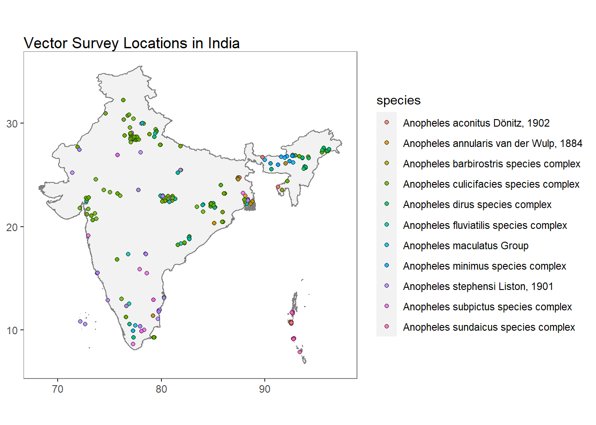
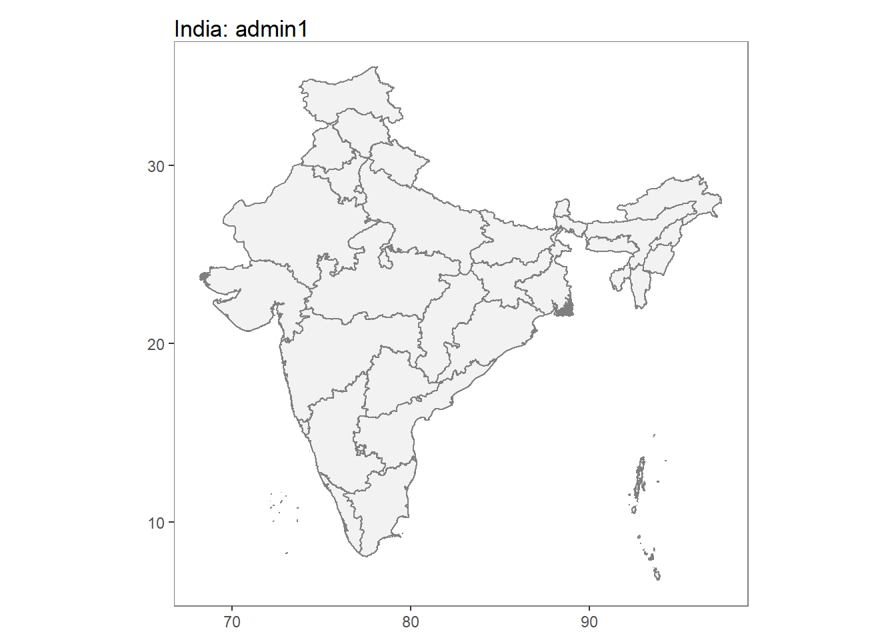
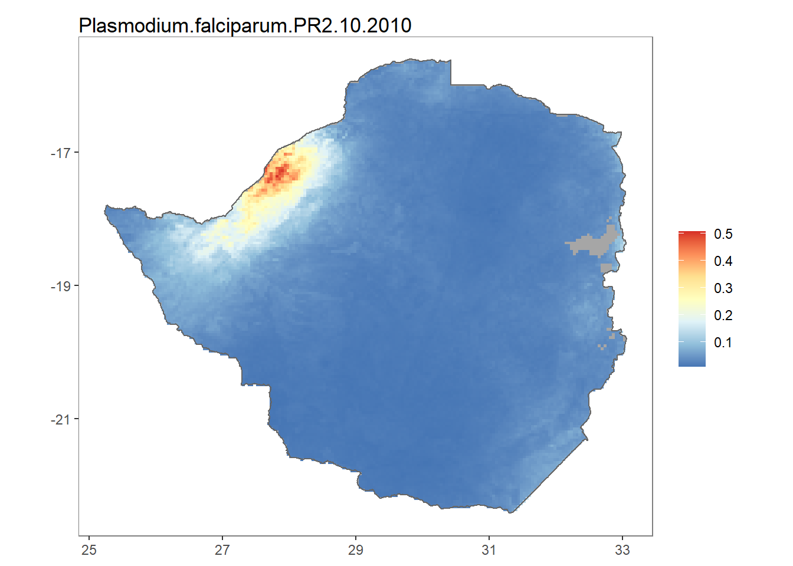
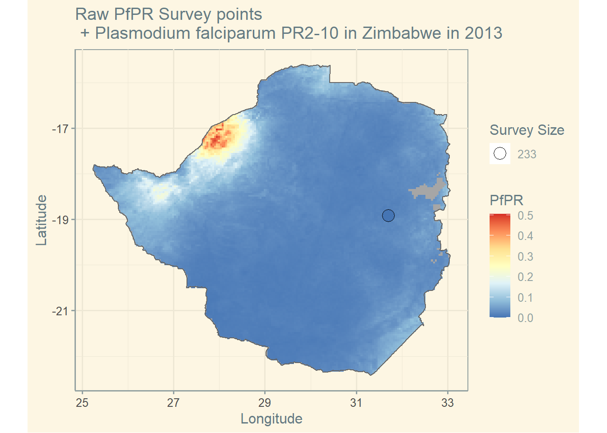
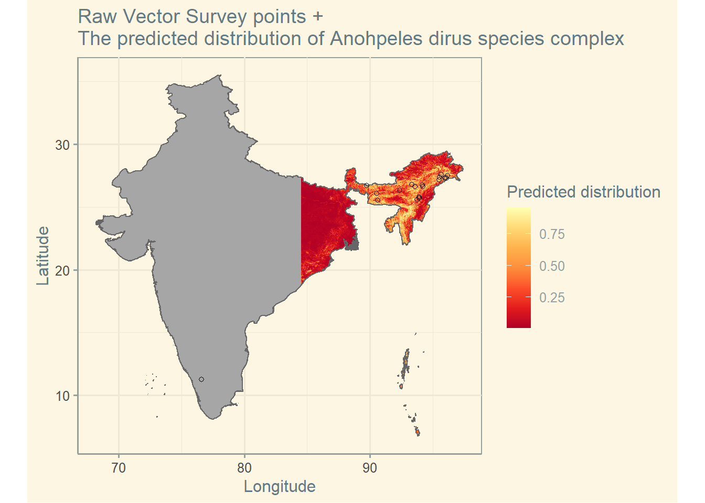

Malaria
Data set details
| Data set description: | Malaria data in different locations |
| Source: | Malaria Atlas Project |
| Details on the retrieved data: | Parasite rate (PR) survey data and vector occurrence data in Zimbabwe and India. |
| Spatial and temporal resolution: | Malaria data at country level (with information on specific sites). |
Downloading and visualising malaria data with malariaAtlas
This tutorial shows how to use the malariaAtlas package to download, visualize and manipulate global malaria data hosted by the Malaria Atlas Project. These data can be explored and downloaded interactively at data explorer.
The malariaAtlas package enables users to download three types of data:
- parasite rate (PR) survey data (Plasmodium falciparum and Plasmodium vivax)
- vector occurrence data
- administrative boundary shapefiles to visualise data
- rasters covering a range of modelled outputs related to malaria research such as predicted malaria parasite prevalence
Installation of malariaAtlas package
The malariaAtlas package can be installed from CRAN and loaded as follows:
install.packages("malariaAtlas")library(malariaAtlas)Checking available data
The malariaAtlas package provides users with a convenient API to interact with the publicly available malaria data hosted by the Malaria Atlas Project. The listData() function helps retrieve a list of all the available data which can be downloaded, and is a wrapper for listPoints(), listRaster() and listShp(). We can find all countries that have PR survey points data with listData(datatype = "pr points"), and all countries with vector occurrence data with listData(datatype = "vector points"). We can also see raster data available with listData(datatype = "raster"), and shapefiles available with listData(datatype = "shape").
The isAvailable_pr() function can be used to check whether a specified country or location has PR survey points. Similarly, isAvailable_vec() checks whether a specified country or location has vector occurrence data. For example, we can check whether Zimbabwe has PR survey points and India has vector occurrence data as follows:
isAvailable_pr(country = "Zimbabwe")
isAvailable_vec(country = "India")Dowloading and visualising data
PR survey data
The getPR() function downloads all the publicly available PR points for a country (or countries) and returns it as a dataframe. The species argument is a string specifying the Plasmodium species and can be Pf, Pv or BOTH.
ZM_PR_data <- getPR(country = "Zimbabwe", species = "BOTH")autoplot() can be used to quickly and easily visualise the downloaded PR survey points.
autoplot(ZM_PR_data)## OGR data source with driver: ESRI Shapefile
## Source: "C:\Users\MORAGAPE\AppData\Local\Temp\RtmpWetdqD\shp\shp473c4d7516de\mapadmin_0_2018.shp", layer: "mapadmin_0_2018"
## with 1 features
## It has 8 fields
Vector data
The getVecOcc() function downloads all publicly available vector points for a country (or countries) and returns it as a dataframe. The species argument is a string specifying the Anopheles species for finding the vector occurrences points, the options are Anopheles.... or ALL.
IN_VEC_data <- getVecOcc(country = "India", species = "ALL")autoplot() uses ggplot2 to visualise vector occurrence data.
autoplot(IN_VEC_data)## OGR data source with driver: ESRI Shapefile
## Source: "C:\Users\MORAGAPE\AppData\Local\Temp\RtmpWetdqD\shp\shp473c663815ec\mapadmin_0_2018.shp", layer: "mapadmin_0_2018"
## with 1 features
## It has 8 fields
Shapefiles
The getShp() function downloads a shapefile for a specified country (or countries). The as.MAPshp() function converts the SpatialPolygon downloaded using getShp() into a MAPshp object (data.frame) for easy plotting with autoplot().
IN_shp <- getShp(ISO = "IND", admin_level = c("admin1"))## OGR data source with driver: ESRI Shapefile
## Source: "C:\Users\MORAGAPE\AppData\Local\Temp\RtmpWetdqD\shp\shp473c62555c35\mapadmin_1_2018.shp", layer: "mapadmin_1_2018"
## with 36 features
## It has 12 fieldsIN_shp <- as.MAPshp(IN_shp)
autoplot(IN_shp)
Modelled Rasters
The getRaster() function downloads publicly available rasters for a specific surface and year, clipped to a given bounding box or shapefile. For example we can download Plasmodium falciparum PR2-10 for Zimbabwe in 2010 as follows:
ZM_shp <- getShp(country = "Zimbabwe", admin_level = "admin0")
ZMB_Pf <- getRaster(surface = "Plasmodium falciparum PR2-10", shp = ZM_shp, year = 2010)Note that to use downloaded rasters and shapefiles directly with autoplot(), they must first be converted to usable rasters and shapefiles data frames, hence we use the as.MAPraster() and as.MAPShp() respectively.
ZMB_Pf <- as.MAPraster(ZMB_Pf)
ZMB_shp_data <- as.MAPshp(ZM_shp)
autoplot(ZMB_Pf, shp_df = ZMB_shp_data)
Complete visualisation examples
Since the ggplot2 is loaded as dependency when the malariaAtlas package is loaded, the functionalities of ggplot2 can also be used for more appeal and options.
PR survey points
ZMB_shp <- getShp(country = "Zimbabwe", admin_level = "admin0") # get shapefile
ZMB_shp_df <- as.MAPshp(ZMB_shp) # convert shapefile
ZMB_PfPR2_10 <- getRaster(surface = "Plasmodium falciparum PR2-10", shp = ZMB_shp, year = 2013) # get raster
ZMB_PfPR2_10_df <- as.MAPraster(ZMB_PfPR2_10) # convert raster
pr <- getPR(country = c("Zimbabwe"), species = "Pf") # get PR data
p <- autoplot(ZMB_PfPR2_10_df, shp_df = ZMB_shp_df, printed = FALSE) # plot raster and shapefile
p[[1]] + geom_point(
data = pr[pr$year_start == 2013, ],
aes(longitude, latitude, fill = positive / examined, size = examined), shape = 21
) +
scale_size_continuous(name = "Survey Size") +
scale_fill_distiller(name = "PfPR", palette = "RdYlBu") +
ggtitle("Raw PfPR Survey points\n + Plasmodium falciparum PR2-10 in Zimbabwe in 2013") +
theme_solarized() +
labs(x = "Longitude", y = "Latitude")
Vector points
IND_shp <- getShp(country = "India", admin_level = "admin0") # get shapefile
IND_shp_df <- as.MAPshp(IND_shp) # convert shapefile
IND_an_dirus <- getRaster(surface = "Anopheles dirus species complex", shp = IND_shp) # get raster
IND_an_dirus_df <- as.MAPraster(IND_an_dirus) # convert raster
vec <- getVecOcc(country = c("India"), species = "Anopheles dirus") # get vector point data
p <- autoplot(IND_an_dirus_df, shp_df = IND_shp_df, printed = FALSE) # plot raster and shapefile
p[[1]] + geom_point(data = vec, aes(longitude, latitude), shape = 21, show.legend = TRUE) +
scale_fill_distiller(name = "Predicted distribution", palette = "YlOrRd") +
ggtitle("Raw Vector Survey points + \nThe predicted distribution of Anohpeles dirus species complex") +
theme(legend.position = "bottom") +
theme_solarized() +
labs(x = "Longitude", y = "Latitude")
References
- The
malariaAtlaspackage repository : https://github.com/malaria-atlas-project/malariaAtlas - Malaria Atlas Project: https://malariaatlas.org/
- Malaria data explorer: https://malariaatlas.org/explorer/#/
Last updated: 2022-06-29
Source code: https://github.com/rspatialdata/rspatialdata.github.io/blob/main/malaria.Rmd
Tutorial was complied using: (click to expand)
## R version 4.0.3 (2020-10-10)
## Platform: x86_64-w64-mingw32/x64 (64-bit)
## Running under: Windows 10 x64 (build 18363)
##
## Matrix products: default
##
## locale:
## [1] LC_COLLATE=English_United States.1252
## [2] LC_CTYPE=English_United States.1252
## [3] LC_MONETARY=English_United States.1252
## [4] LC_NUMERIC=C
## [5] LC_TIME=English_United States.1252
##
## attached base packages:
## [1] stats graphics grDevices utils datasets methods base
##
## other attached packages:
## [1] malariaAtlas_1.0.1 ggthemes_4.2.4
## [3] here_1.0.1 sf_0.9-7
## [5] MODIStsp_2.0.5 raster_3.5-15
## [7] sp_1.4-5 nasapower_4.0.7
## [9] viridis_0.5.1 viridisLite_0.3.0
## [11] rnaturalearth_0.1.0 terra_1.5-17
## [13] rdhs_0.7.2 DT_0.17
## [15] forcats_0.5.1 stringr_1.4.0
## [17] dplyr_1.0.4 purrr_0.3.4
## [19] readr_1.4.0 tidyr_1.1.4
## [21] tibble_3.1.6 tidyverse_1.3.1
## [23] openair_2.9-1 leaflet_2.1.1
## [25] ggplot2_3.3.5 rgeoboundaries_0.0.0.9000
##
## loaded via a namespace (and not attached):
## [1] colorspace_2.0-3 ellipsis_0.3.2 class_7.3-17
## [4] rgdal_1.5-23 rprojroot_2.0.2 fs_1.5.2
## [7] httpcode_0.3.0 rstudioapi_0.13 farver_2.1.0
## [10] hexbin_1.28.2 urltools_1.7.3 fansi_0.4.2
## [13] lubridate_1.8.0 xml2_1.3.2 codetools_0.2-16
## [16] splines_4.0.3 cachem_1.0.6 knitr_1.33
## [19] jsonlite_1.8.0 broom_0.8.0 cluster_2.1.0
## [22] dbplyr_2.1.1 png_0.1-7 rgeos_0.5-5
## [25] hoardr_0.5.2 mapproj_1.2.8 compiler_4.0.3
## [28] httr_1.4.2 backports_1.4.1 assertthat_0.2.1
## [31] Matrix_1.2-18 fastmap_1.1.0 cli_3.2.0
## [34] htmltools_0.5.2 tools_4.0.3 gtable_0.3.0
## [37] glue_1.4.2 gdalUtilities_1.2.1 maps_3.4.0
## [40] rappdirs_0.3.3 Rcpp_1.0.7 cellranger_1.1.0
## [43] jquerylib_0.1.4 vctrs_0.3.8 crul_1.2.0
## [46] countrycode_1.2.0 nlme_3.1-149 crosstalk_1.2.0
## [49] xfun_0.30 rvest_1.0.2 lifecycle_1.0.1
## [52] rnaturalearthhires_0.2.0 zoo_1.8-8 MASS_7.3-53
## [55] scales_1.1.1 hms_1.1.1 parallel_4.0.3
## [58] RColorBrewer_1.1-2 yaml_2.2.1 curl_4.3.2
## [61] memoise_2.0.1 gridExtra_2.3 sass_0.4.0
## [64] triebeard_0.3.0 latticeExtra_0.6-29 stringi_1.5.3
## [67] highr_0.9 e1071_1.7-4 storr_1.2.5
## [70] bitops_1.0-7 rlang_0.4.10 pkgconfig_2.0.3
## [73] evaluate_0.15 lattice_0.20-41 htmlwidgets_1.5.4
## [76] labeling_0.4.2 tidyselect_1.1.0 magrittr_2.0.1
## [79] R6_2.5.0 generics_0.1.2 DBI_1.1.2
## [82] pillar_1.7.0 haven_2.5.0 withr_2.5.0
## [85] mgcv_1.8-33 xts_0.12.1 units_0.6-7
## [88] modelr_0.1.8 crayon_1.5.1 KernSmooth_2.23-17
## [91] utf8_1.1.4 rmarkdown_2.11 jpeg_0.1-9
## [94] grid_4.0.3 readxl_1.3.1 data.table_1.14.2
## [97] reprex_2.0.1 digest_0.6.27 classInt_0.4-3
## [100] munsell_0.5.0 bslib_0.3.1
Corrections: If you see mistakes or want to suggest changes, please create an issue on the source repository or submit a pull request Contributions: If you want to contribute or collaborate on the project, please see the guidelines for collaborating Reuse: Text and figures are licensed under Creative Commons Attribution CC BY 4.0.